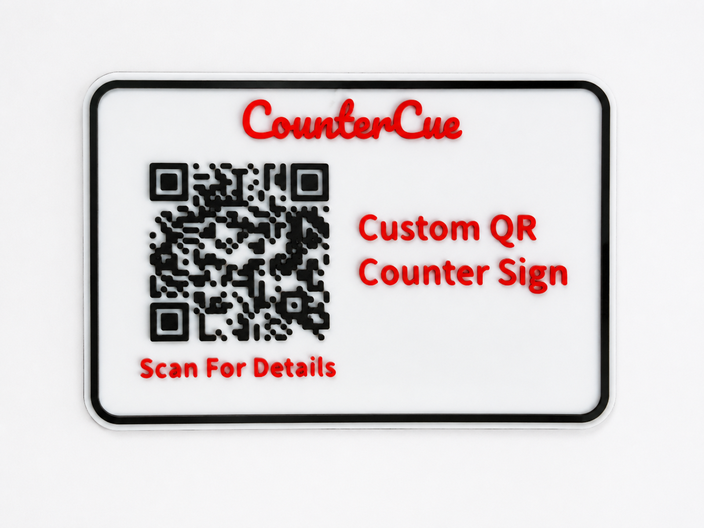
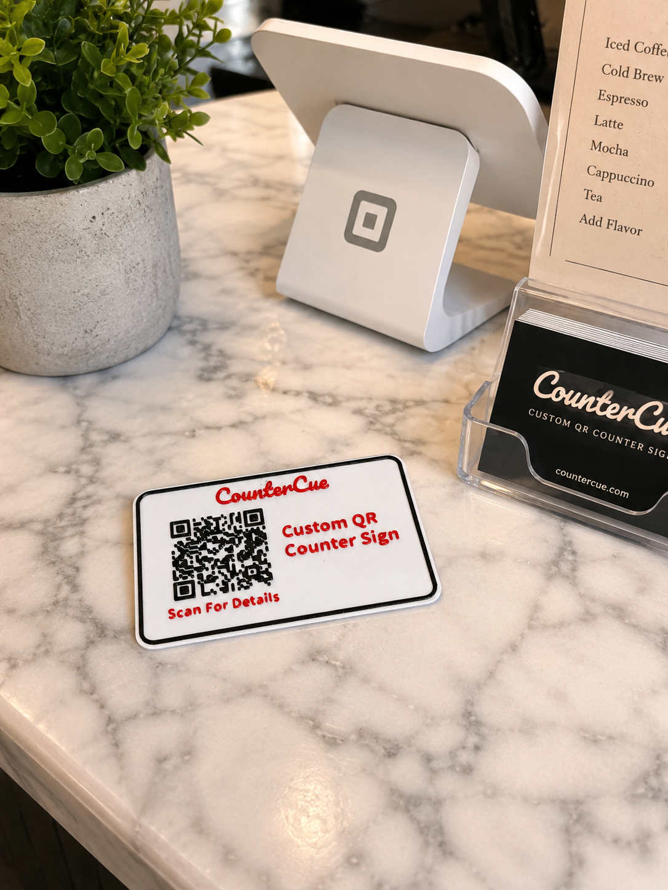
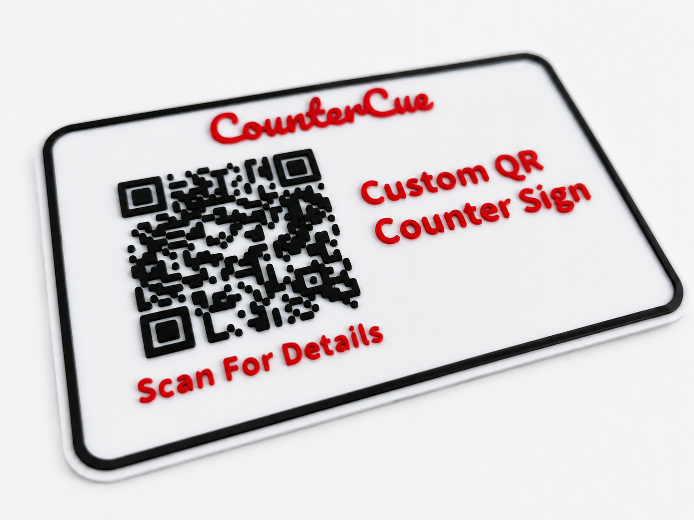

Custom QR counter sign
$29.95
Made to order with your QR destination, business/name text, short call-to-action, and color preference. Sample size is about 150 x 100 x 2 mm before any order-specific adjustment.
CounterCue Signs | Chino, California
A cleaner replacement for taped paper QR codes: turn your menu, review link, booking page, tip link, payment link, socials, or business-card QR into a made-to-order counter display.
$29.95
Made to order with your QR destination, business/name text, short call-to-action, and color preference. Sample size is about 150 x 100 x 2 mm before any order-specific adjustment.
$19.95
Fallback fast-turn holder for a printed QR card, menu card, business card, review link, or booking link.
$29.95
Custom counter name sign with a QR card slot for vendors, salons, service providers, creators, and local sellers.
CounterCue Signs is taking made-to-order QR counter sign orders for Chino-area counters, vendor booths, pop-ups, salons, cafes, and service desks. Use Big Cartel to order, then send the QR destination, text, color preference, and revision/customization notes through the request form or contact page. Customer orders get their own destination/link check before delivery. No item is claimed in stock, guaranteed scan-tested, or ready to ship today.

Clean tabletop QR counter sign sample. Customer orders use the buyer-provided destination link, text, and colors.

Counter context for vendor booths, checkouts, service desks, salons, cafes, and pop-up tables. Props are shown for context only.

Raised QR and text detail on a lightweight printed sign. Custom colors are available when practical.
Order through Big Cartel, then use the request form for QR destination, wording, color requests, one reasonable pre-production revision, bulk questions, rush timing, and special use cases. You can also use the Big Cartel contact page.
Local pickup is by appointment within 5 miles of Chino, CA at a secure public location. Shipping is available when practical after order details are confirmed.